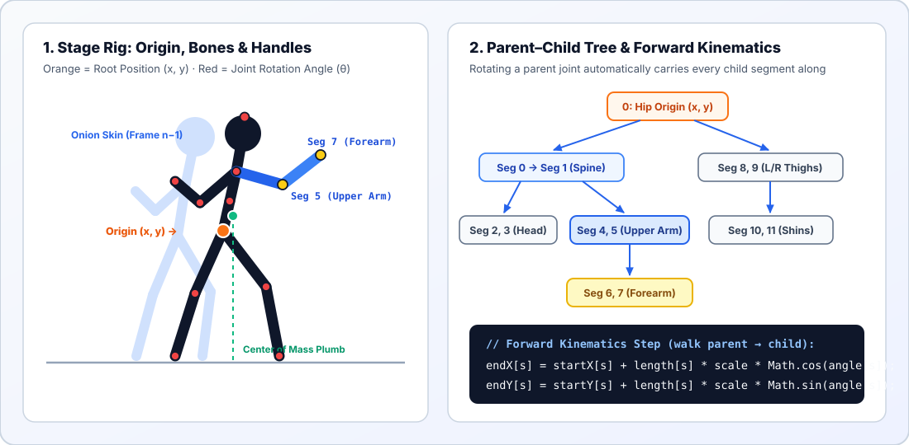

2D Design · Character Rigging · Keyframe Animation
Pivot Stick Figure Studio: 2D Rigging & Keyframes
Before an animator worries about clothing, shading, or facial detail, the entire performance—weight, balance, anticipation, and timing—must read clearly in a simple skeleton. Inspired by Peter Bone's classic Pivot Stickfigure Animator and powered by ClassroomOS's own PivEngine, this in-house studio lets you pose joint hierarchies, scrub onion-skinned timelines, inspect real student .piv projects, and learn the exact trigonometry that makes a 2D character rig move.
Interactive Workshop · Pose · Keyframe · Tween · Export
In-House Pivot Stick Figure Studio
Switch between starter presets (Walk Cycle, Anticipation Jump, Martial Arts Kick) or load real student .piv animations from the STEAM Showcase. Toggle FK Chain to feel the difference between rotating a whole limb hierarchy versus a single bone, and watch the green Center of Mass (CoM) plumb line to see when your character is balanced or airborne.
Add to Stage
Selected Figure
Kinematics & Guides
12-Bone Hierarchy Tree
Click a segment to highlight it on the stage and inspect its parent joint:
Live Trig & FK Readout
PivEngine calculates its endpoint coordinates.
Section 2 · How Skeletal Rigs Work
Forward Kinematics & Parent–Child Hierarchies
Why don't your fingers detach from your hand when you wave your arm? Because the human skeleton is a tree graph. Every bone has a parent joint, and everything ultimately traces back to one root: the pelvis (hip origin).
In a 2D stick-figure animator, we do not store the (x, y) pixel position of every hand, knee, and foot in the file. Instead, each frame stores only:
- One stage position
(x, y)for the orange origin handle at the pelvis. - One angle
θ(in radians) for each segment (`0` through `11`).
To draw the figure, the engine walks the tree from parent to child using Forward Kinematics (FK). For every segment s, it looks up the endpoint of its parent segment, then uses cosine and sine to place the new endpoint at distance L:

FK Chain ON vs. Single-Bone Mode
When you rotate your shoulder by +30° without bending your elbow, your forearm's world angle also changes by +30°. Try toggling FK Chain: OFF in the studio above and dragging an upper arm—you will see the forearm keep its old world angle while still staying glued to the elbow!
Why the Pelvis Is Root 0
If the foot were the root, lifting your foot to take a step would move your entire body! Placing the root at the pelvis lets you move the body's core weight with one orange handle while the spine and legs branch outward independently.
Section 3 · Motion Physics for Animators
Keyframes, Onion Skinning & Center of Mass
A stick figure has no facial expressions, so your audience reads emotion and physical force entirely from body mechanics:
1. Onion Skinning & Spacing
Named after the translucent tracing paper traditional animators layered over light tables, Onion Skinning draws the previous 1–2 frames as faint blue ghosts behind your current pose. Close spacing between ghosts creates slow, heavy motion (ease-in / ease-out); wide gaps create fast, explosive action.
2. Center of Mass (CoM) & Balance
Turn on CoM Balance in the studio and watch the green plumb line drop to the floor. For a standing pose to look stable, that green dot on the floor must land between the character's feet (the base of support). The moment it moves outside the feet, the viewer's brain knows the character is falling, running, or leaping!
3. Anticipation & Squash/Stretch
Load Preset 2 · Anticipation, Jump & Squash. Notice Frame 2: before jumping up, the figure crouches down and swings both arms backward. Without that downward crouch, a jump feels robotic and weightless.
4. Shortest-Arc Auto-Tweening
When you click ✦ +3 In-Betweens, the studio interpolates every joint angle from frame A to frame B. To prevent limbs from spinning the long way around (`350°` instead of `-10°`), it normalizes Δθ = b − a into [−π, +π] before blending.
Section 4 · Under the Hood of lib/piv-engine.js
How to Code Your Own Stick-Figure Animator
Want to build your own stick-figure animation tool or boss-fight rig for a JavaScript game? The entire core of ClassroomOS's PivEngine fits in three clean steps:
// 1. Define the 12-segment skeleton: [length, thickness, parentOneBased]
const DEFAULT_FIGURE = [
[32, 14, 0], // 0: lower spine (from hip origin 0)
[32, 14, 1], // 1: upper spine (from end of seg 0)
[33, 14, 2], // 2: neck & head axis (from end of seg 1)
[20, 20, 3], // 3: head circle
[38, 14, 2], [38, 14, 2], // 4, 5: L/R upper arms (from shoulders = end of seg 1)
[40, 14, 5], [40, 14, 6], // 6, 7: L/R forearms (from elbows = end of seg 4, 5)
[50, 14, 0], [50, 14, 0], // 8, 9: L/R thighs (from hip origin 0)
[50, 14, 9], [50, 14, 10] // 10, 11: L/R shins (from knees = end of seg 8, 9)
];
// 2. Forward Kinematics pass: compute (startX, startY) -> (endX, endY)
for (let s = 0; s < segs.length; s++) {
const p = segs[s].parent;
const sx = (p === 0) ? fig.x : endX[p - 1];
const sy = (p === 0) ? fig.y : endY[p - 1];
startX[s] = sx;
startY[s] = sy;
endX[s] = sx + segs[s].length * fig.scale * Math.cos(fig.angles[s]);
endY[s] = sy + segs[s].length * fig.scale * Math.sin(fig.angles[s]);
}
// 3. When the user drags red handle `s` to mouse (mx, my), update angle with atan2:
fig.angles[s] = Math.atan2(my - startY[s], mx - startX[s]);Because DEFAULT_FIGURE orders parent bones before their children (`0` before `1`, `4` before `6`, `8` before `10`), a single loop from `s = 0` to `11` guarantees every parent's endpoint is already calculated before its child needs it!
Section 5 · Connect Your Work
From Stick Figure to Game Sprite Sheet & Showcase
Every animation you build in the studio above can go two places immediately:
- Save
.pivfor the STEAM Showcase: Click ⬇ Save.pivto download a binary version-5.pivfile compressed with Deflate—the exact format decoded bylib/piv-engine.jsandlib/piv-player.jsin the ClassroomOS Showcase. - Export PNG Sprite Sheet for Your 2D Game: Click ⬇ Export Sprite Sheet (PNG) to render every frame side-by-side on a transparent strip. Take that strip into 2D Game Dev 02 · Sprite Sheets & Animation or open it in Photo Editing Workshop (Layer Lab) to paint custom armor, hair, and effects on a new layer above your posed stick-figure skeleton (rotoscoping)!
Practice · Check Your Understanding
Rigging & Animation Check
Concept1. In a stick-figure rig, which point serves as the root origin (x, y) from which both the spine and the thighs branch?
Math2. A forearm segment starts at the elbow (200, 150), has length 40 px, and points straight to the right (angle θ = 0°, where cos(0°) = 1 and sin(0°) = 0). What is the endX coordinate of the hand?
endX = startX + length × cos(0°) = 200 + 40 × 1.Kinematics3. What happens when you rotate an upper arm segment while Forward Kinematics (FK Chain) is enabled?
Timing4. Your animation has 24 frames and plays at 12 FPS. How many seconds does one full loop last?
Physics5. Where must the vertical plumb line from a standing character's Center of Mass (CoM) land on the floor so the pose looks balanced rather than falling over?